Mava AI
An AI-powered customer support platform. I helped bring clarity and consistency to its chat experience across web and mobile, supported by a shared design system.

Overview
Mava AI helps teams manage customer support with AI assistance. The product brings conversations into a shared environment where support teams can respond to customer needs.
My contribution focused on making this experience more cohesive across web and mobile. I worked on the chat interface and its underlying design system, creating consistent patterns for conversations, controls, and interface states.
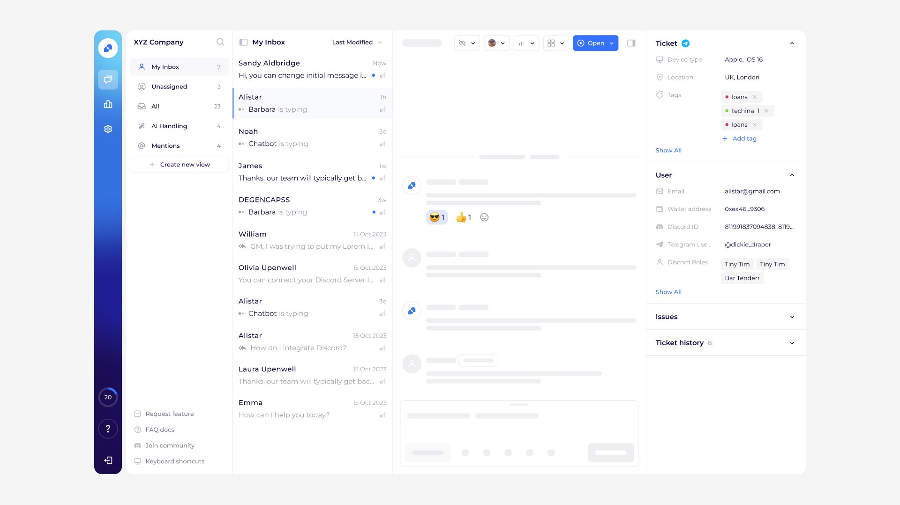
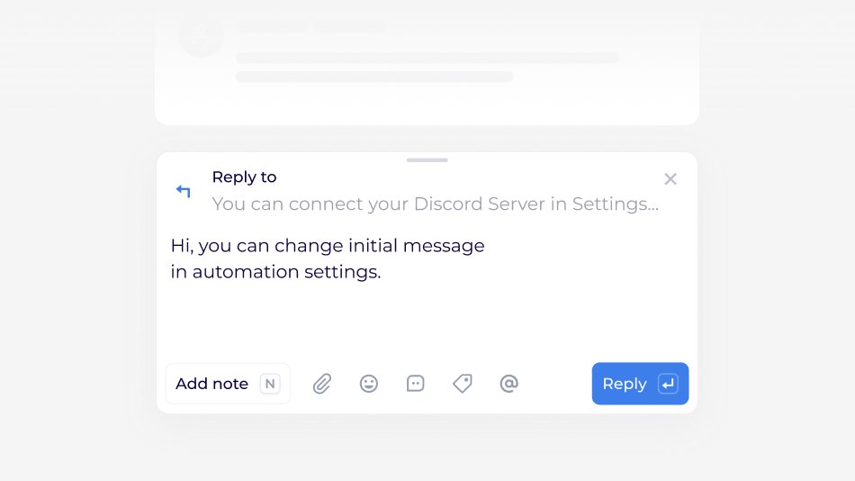
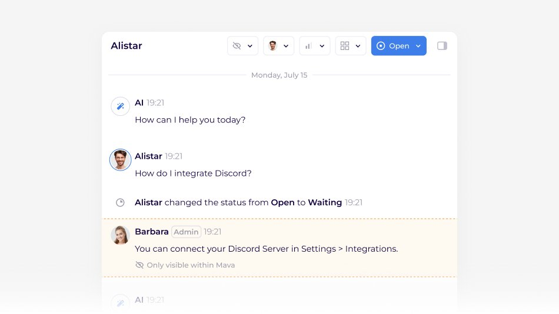
My role
As a Product Designer, I worked on the web and mobile chat experience alongside a shared design system with light and dark themes. My focus was on connecting detailed interface decisions with reusable foundations for the product.
- Clarified the visual hierarchy of conversations and supporting controls.
- Adapted chat layouts and interactions for web and mobile.
- Standardized components and interface states across light and dark themes.
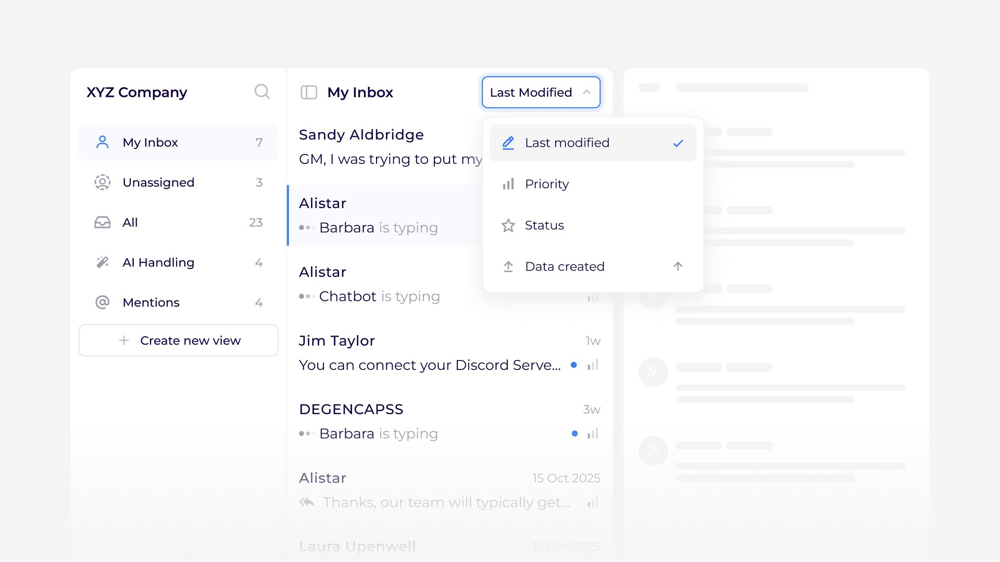
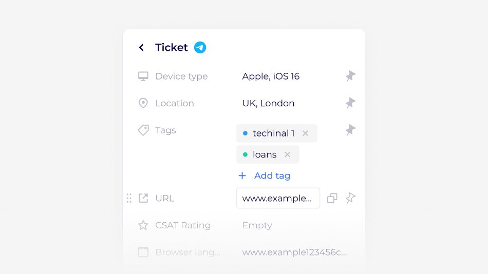
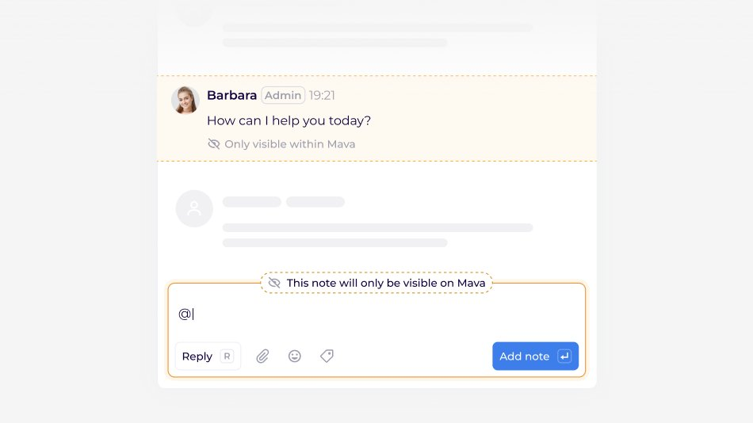
Challenge
Support interfaces need to present messages, actions, and conversation context clearly within limited space. Bringing that experience to mobile adds another layer of complexity: the same information must remain accessible within a much smaller layout.
The design challenge was to maintain clarity and familiar behavior across screen sizes and themes while supporting a consistent product identity.
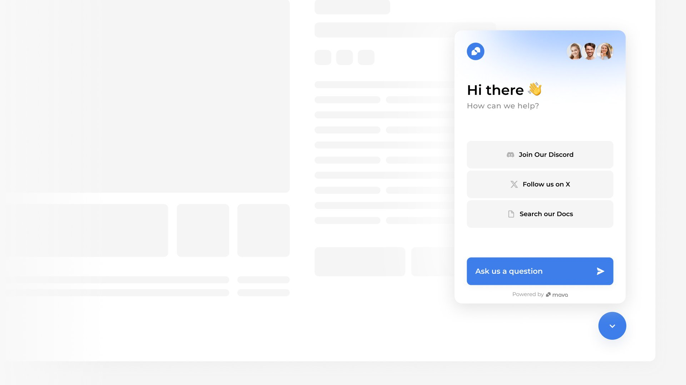
Approach
I refined the chat interface around message readability, clear grouping, and accessible conversation controls. For mobile, I adapted layouts and navigation to preserve the context of the conversation within a smaller screen.
Alongside the interface work, I developed reusable components and defined their behavior across light and dark themes. This connected individual screens through a common visual and interaction language.
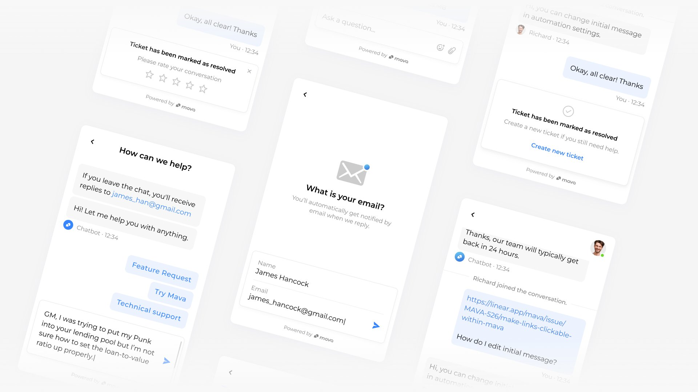
Outcome
My work gave Mava a more cohesive chat experience across web and mobile, with consistent treatment of messages, controls, and interface states.
The shared design system provided a reusable foundation for product development, helping the team carry the same design decisions across screens and themes as the product evolved.
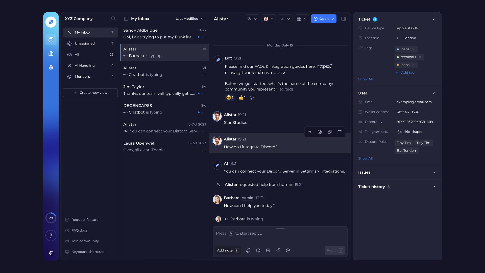
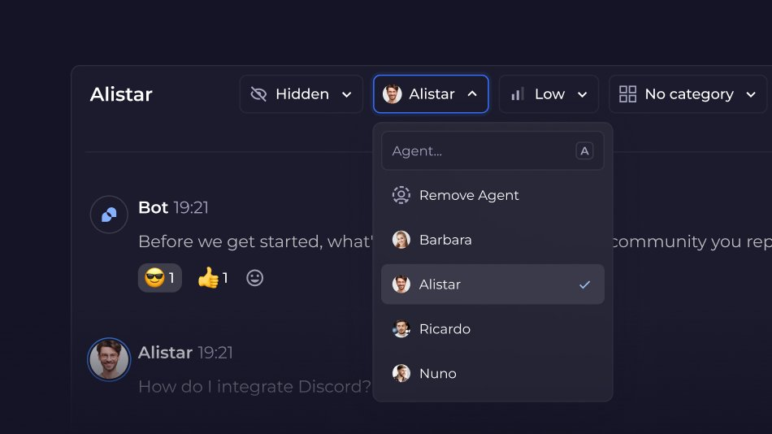
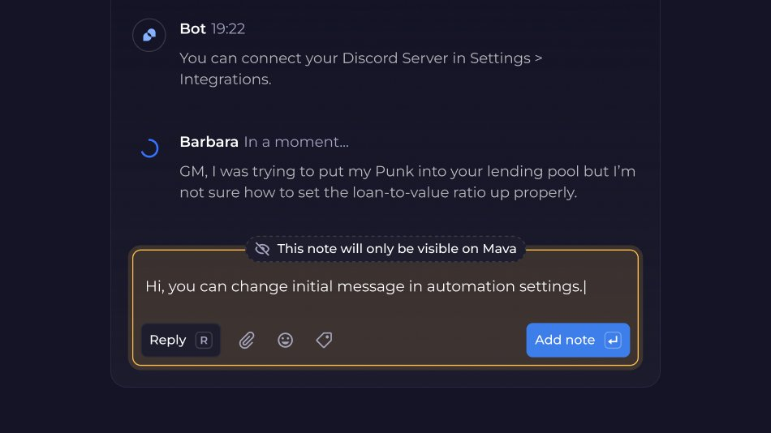
See the live product
Visit mava.app (opens in a new tab)